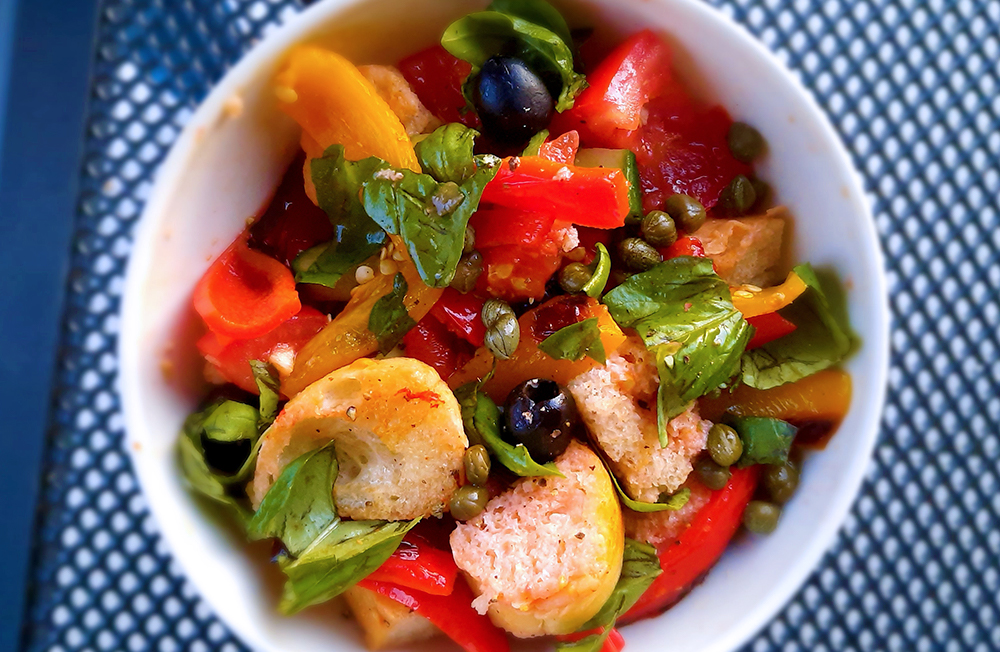

biefstuk chimichurri & gegrilde groenten

bami met spinazie

japanse beef teriyaki

salade met gegrilde ananas

koreaanse bibimbap

falafelwrap

avocado salade

amerikaanse caesar salade

italiaanse caponata

panzanella
Dit gerecht is ideaal om je restjes in op te maken, zoals oud brood. Panzanella is het antwoord op een uitgebreidere bruschetta.

Bereidingsduur: 40 minuten
Aantal personen: 2
Ingrediënten:
1 oude ciabatta
2 stuks paprika
0,5 stuk komkommer
50 gram olijven
30 gram kappertjes
1 rode ui
4 takjes basilicum
2 tomaten
1 teentje knoflook
8 eetlepels olijfolie
3 eetlepels rode wijnazijn
1 stuk peper
naar smaak peper en zout
1 oude ciabatta
2 stuks paprika
0,5 stuk komkommer
50 gram olijven
30 gram kappertjes
1 rode ui
4 takjes basilicum
2 tomaten
1 teentje knoflook
8 eetlepels olijfolie
3 eetlepels rode wijnazijn
1 stuk peper
naar smaak peper en zout
Instructies:
1. Gebruik het liefst een oude ciabatta maar nieuw kan ook. Snijd het brood in kleine stukjes, de ui grof en de knoflook in kleine stukjes. Verwijder de zaadjes van de tomaten en vang het vocht op. Breng het vocht op smaak met de knoflook, wat zwarte peper, olijfolie en 1,5 EL rode wijnazijn. Meng en schenk dit goed over het brood. Gebruik eventueel nog wat extra olijfolie.
2. Gril de ui, paprika en peper tot deze zwarte streepjes hebben. Verwijder de zaadlijsten van de paprika en peper en snij de paprika in reepjes en de peper in kleine stukjes. Snijd de komkommer en tomaat in kleine stukjes.
3. Week de kappertjes in de overgebleven rode wijnazijn.
4. Neem een schaal en verdeel hier het brood, de paprika, peper, tomaat, komkommer, olijven, ui, kappertjes en gescheurde basilicum over. Breng op smaak met wat peper en zout.
1. Gebruik het liefst een oude ciabatta maar nieuw kan ook. Snijd het brood in kleine stukjes, de ui grof en de knoflook in kleine stukjes. Verwijder de zaadjes van de tomaten en vang het vocht op. Breng het vocht op smaak met de knoflook, wat zwarte peper, olijfolie en 1,5 EL rode wijnazijn. Meng en schenk dit goed over het brood. Gebruik eventueel nog wat extra olijfolie.
2. Gril de ui, paprika en peper tot deze zwarte streepjes hebben. Verwijder de zaadlijsten van de paprika en peper en snij de paprika in reepjes en de peper in kleine stukjes. Snijd de komkommer en tomaat in kleine stukjes.
3. Week de kappertjes in de overgebleven rode wijnazijn.
4. Neem een schaal en verdeel hier het brood, de paprika, peper, tomaat, komkommer, olijven, ui, kappertjes en gescheurde basilicum over. Breng op smaak met wat peper en zout.